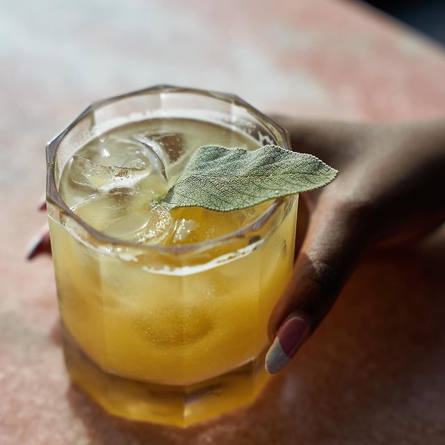
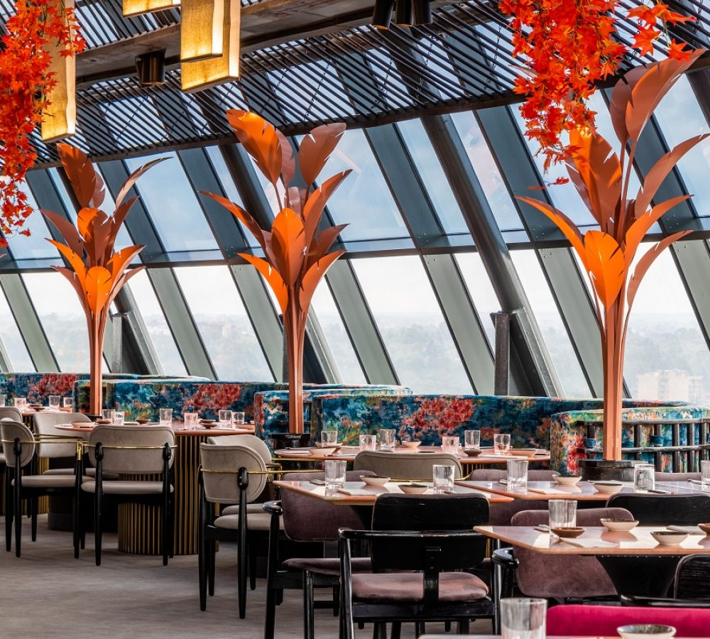
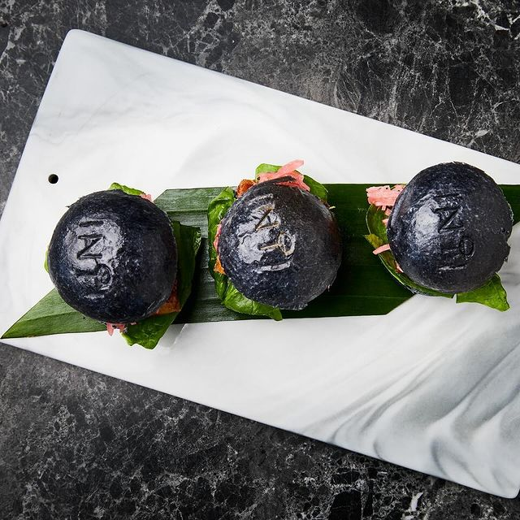
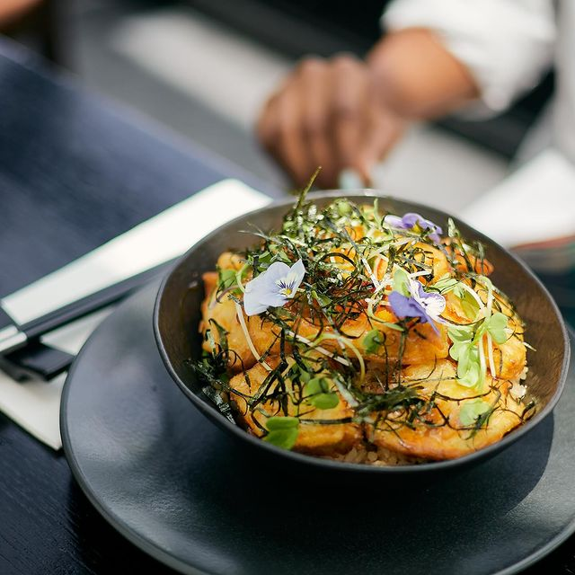
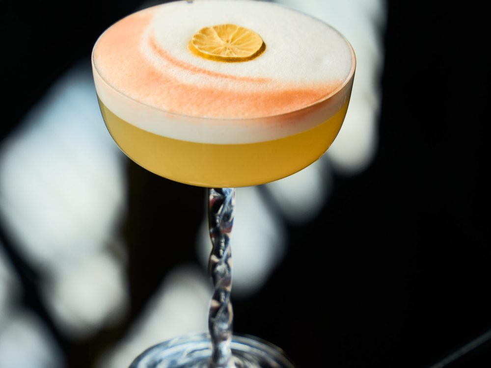
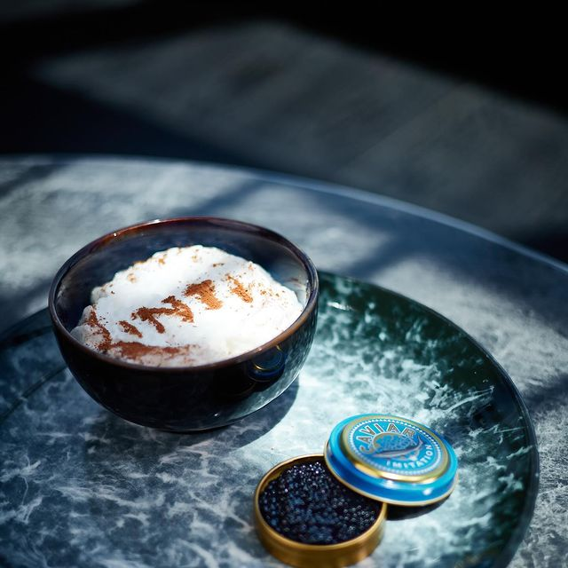
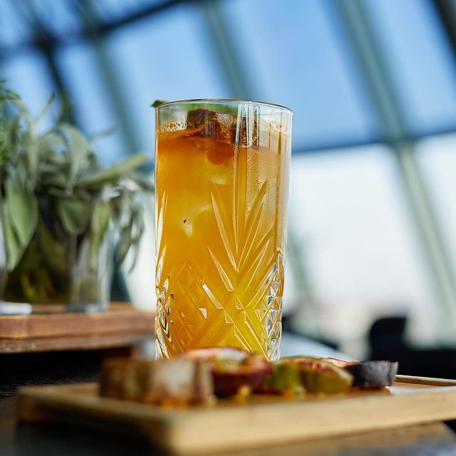
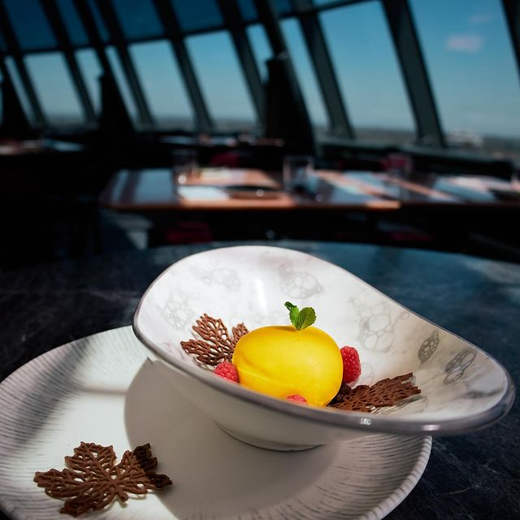

Citrus

Nairobi · 20th Floor
Precision. Fire. Citrus. Smoke. One city above it all.
Reserve the experience ↗Scroll into Nikkei
Japan
Knife work. Restraint. Balance. The confidence to leave only what matters.
Peru
Aji. Citrus. Smoke. Colour. Flavour that arrives with its whole personality.
Two traditions did not cancel each other out.
They created Nikkei.
Aperitivos
Crispy chicken. Black mini bao. Creamy yellow chilli. Pickled radish.
Mini Nikkei Burger
The meeting point
Every plate is built from tension: clean and loud, raw and charred, cool and alive.
Explore the food menu ↗
Peru's national spirit
Pisco is distilled from grapes, never diluted after distillation, and transformed at INTI through citrus, bitters, herbs and house infusions.

Citrus

Ritual

Balance

The final light
Yuzu. Coconut. Chocolate. Passion fruit. Dessert here is not an afterthought—it is the last scene.
See dessert menu ↗Choose your route
Above Nairobi
Dress for the evening. Bring your curiosity. Leave the ordinary downstairs.
Reserve your table ↗